Változók - Variables:
-
A változók megcímkézett memóriaterületek, amiket az
értelmező (interpeter)
ideiglenesen lefoglal az adatok tárolására, amíg a program
fut.
-
Mivel a Python típusfüggetlen nyelv, ezért nincs változó
deklaráció a nyelvben. Hanem csak simán definiálom, majd
használom.
valtozoNev = valtozoErtek
Hogy mi lesz a változó adattípusa, majd az interpeter
eldönti a szintaktikai szabályai alapján. Például, ha
idézőjelek között van a
valtozoErtek, akkor szöveg típus
(string).
-
Sőt újradefiniálással bármikor megváltoztathatom a változó
adattípusát!
valtozoNev = "tanuló" -
string, majd később
valtozoNev = 12 -
integer.
-
Megkaphatjuk a változó adattípusát a
type() függvény segítségével.
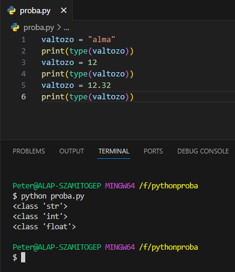
-
Szabályok a változók azonosítójára (identifier), nevére.
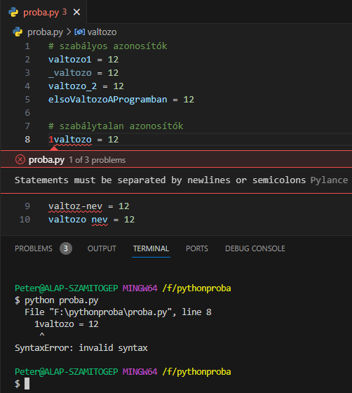
-
Több változónak is adhatunk egyszerre értéket egy sorban,
vesszővel elválasztva őket.
elso, masodik, harmadik = 12, 23, 45
A hozzárendelés operátora (=)
mindkét oldalán ugyanannyi érték kell hogy legyen! Egyébként
ValueError-t kapunk!
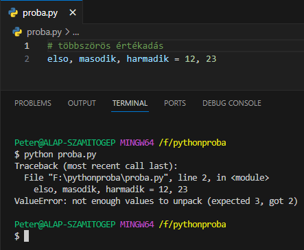
-
Egy érték rendelése több változóhoz egy sorban.
elso = masodik = harmadik = 12
-
Listák, tuple-ok kicsomagolása (unpacking).
lista = ["alma", "barack", "körte"]
x, y, z = lista
Ekkor x = "alma",
y = "barack",
z = "körte" lesz.
-
Változók kiíratása a konzolra a
print() függvénnyel történik.
Néhány észrevétel.
-
Több változót vesszővel írathatunk ki. Ekkor
változók közé szóközt rak a Python a konzolon.
- Működik minden adattípussal.
-
Több változót +-karakterrel is kiírathatunk. Ekkor
változók közé nem rak semmit a Python a konzolon.
Célszerű már az értékadásnál elhelyezni a
szóközöket!
-
Ez csak string típusú
változóknál működik. Egyébként
TypeError-t kapunk!
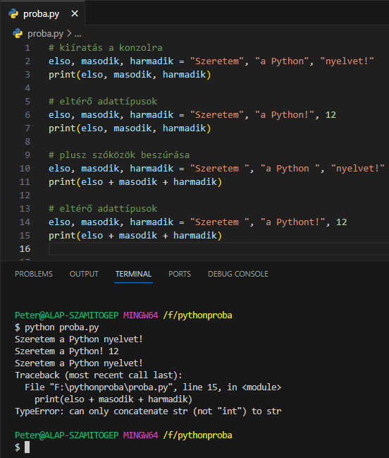
-
Minden változónak létezik "hatóköre"
scope, ahonnan látható. Két
fajtája létezik.
-
globális hatókör (global scope):
azoknak a változóknak a hatóköre, amelyek az állományon
belül mindenhonnan láthatóak.
-
lokális hatókör (local scope):
azoknak a változóknak a hatóköre, amelyeket egy függvényen,
vezérlési szerkezeten vagy osztályon belül definiáltak.
Ezeken kívül alapból nem láthatóak. Futtatás esetén
NameError-t kapunk.
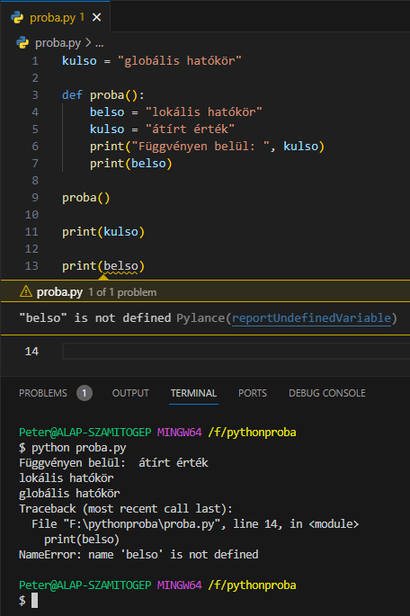
-
global: ezzel a kulcsszóval a
függvényen belül létrehozott lokális változókat globálissá
lehet változtatni.
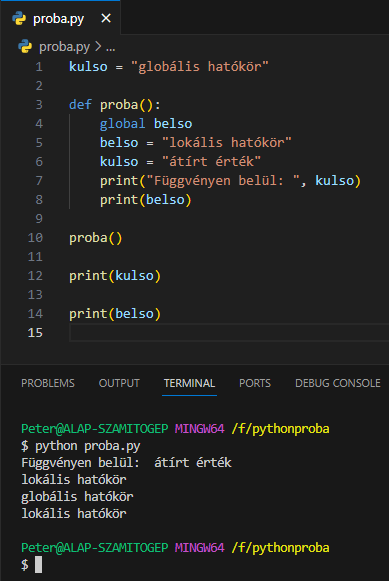
- Globális változó értékét is meg tudjuk így változatani.
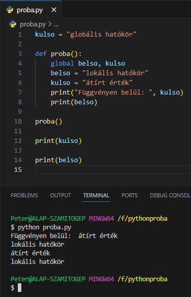
Adattípusok:
-
Az adatok különbözőek lehetnek. Lehetnek szövegek, számok,
logikai értékek stb. Ezért különböző műveleteket tudunk
rajtuk végrehajtani. Például két számot össze tudunk
szorzni, de két szöveget nem.
-
Ezért a változóknak a különböző adattípusoknak megfelelően
kell eltárolni az adatokat. Ezekhez az adattípusokhoz
számos, csak ezekkel az adattípusokkal végezhető, művelet
tartozik.
-
Később látni fogjuk, hogy ezek az adattípusok osztályokat
határoznak meg, és a műveleteket metódusoknak fogjuk hívni.
- Beépített adattípusok a Python-ban.
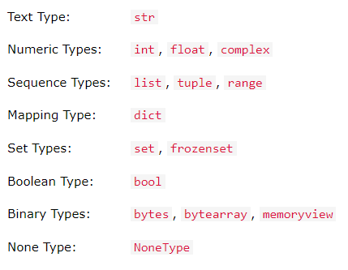
-
A Python-ban egy változó akkor kap adattípust, ha
hozzárendelünk valamit.
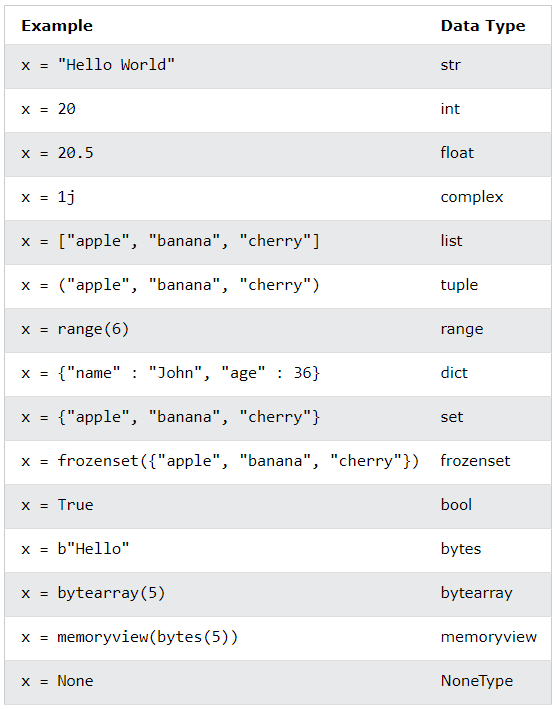
- Ugyanez konstruktorokkal.
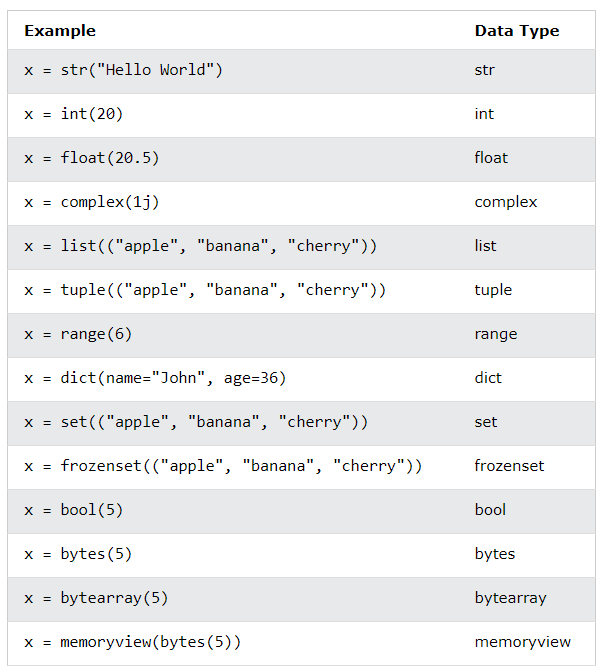
Literálok - Konstansok a szövegben:
-
literál: programozás közben
számos konstanst elhelyezünk a kódban, főleg az értékadás
jobb oldalán. Ezeket nevezzük literáloknak.
-
Logikai literál kettő van:
True és
False.
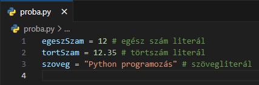
Kasztolás - Típuskényszerítés
-
Kasztolásról (casting),
típukényszerítésről akkor beszélünk, ha egy változó
adattípusát explicit módon megváltoztatjuk. Például.
valtozo = "12", string
adattípus
valtozo = int("12"), integer
adattípus
Tehát egy string típusú adatból csináltunk egy integer
típusút.
-
Ez azért lehetséges, mert a Python objektum-orientált nyelv,
és így a típusainak létrehozásához osztályokat használ. Ezek
konstruktorainak meg sok minden argumentumot odaadhatunk.
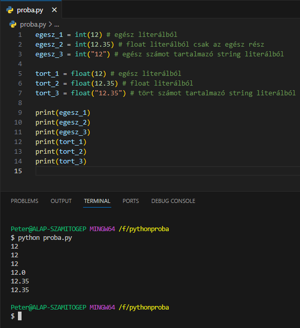
Források:
w3schools/python
python.org